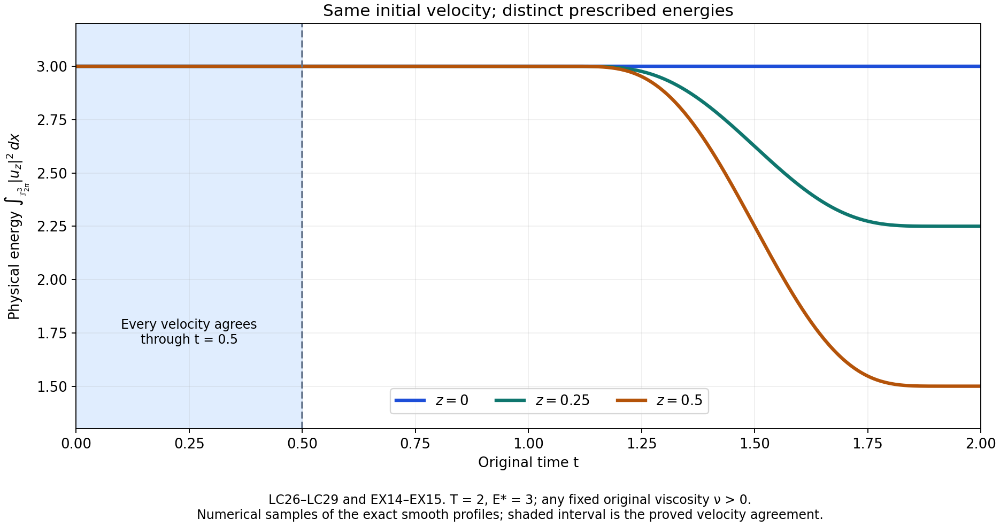
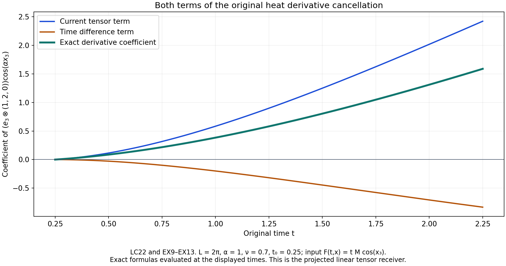

Prescribed energy and the complete infinite weak solution
Lesson 26 proved every finite stress estimate. We can now finish the physical energy induction and construct an actual infinite weak Navier–Stokes solution.
The proof starts by retaining every signed energy contribution, then handles vanishing amplitudes and both original time endpoints. It proves convergence, prescribed energy and the full equation with its original pressure comparison. Explicit heat kernels give continuous integrable vorticity. A locality calculation then constructs different solutions with the same initial velocity. The five solved exercises strengthen the energy threshold, include Lipschitz energy profiles, test all pressure means and heat signs, and construct an entire continuum of solutions.
The human source is Tristan Buckmaster and Vlad Vicol, Nonuniqueness of weak solutions to the Navier–Stokes equation, arXiv:1709.10033v4, original author TeX178–226,286–345 and1398–1531. This chapter supplies the complete argument for that weak-solution construction using the preceding lessons. Its separate vanishing-viscosity theorem remains the next source comparison. No smooth unforced blowup or Leray–Hopf nonuniqueness is claimed.
The physical torus has period \(L\), volume \(V=L^3\) and frequency unit \(\alpha=2\pi/L\). We retain the original condition \(V\geq1/(50\sqrt3)\) from SC12, which includes the source period \(L=2\pi\), and the complete fixed positive viscosity \(\nu>0\). The force is zero. Every norm uses the physical, unaveraged Lebesgue integral. All constants below are defined in the complete proofs of the preceding chapters.
IC, IK and OS refer to lesson 23; SC and AB to lesson 24; VC, PL and VD to lesson 25; SM, SP and ST to lesson 26. EE and LC are the two successive parts of the present proof. The source's half-strength interpolation exponent and printed mild-form sign are compared explicitly in LC1 and LC6. The original author's statements remain identifiable. This is author self-checked exposition; no independent review or novelty is asserted.
EE1. Exact parameters, energy and all receiving constants
Use the actual finite construction of lessons 24–26 on its original time interval, with no force, original viscosity \(\nu>0\), period \(L\), volume \(V=L^3\) and physical frequency \(\alpha=2\pi/L\). Keep all previous base thresholds and the parameters
\[ \begin{gathered} X=\lambda_q=a^{b^q},\quad \Lambda=X^b,\quad \ell=X^{-20},\quad r=\Lambda^{3/4},\quad \sigma=\Lambda^{-15/16},\quad\mu=\Lambda^{5/4},\\ b\in16\mathbb N,\quad b\geq976,\quad \theta=\frac1{64b^2},\quad\varepsilon_R=\frac1{64b},\quad p=\frac{128b}{128b-1},\\ \delta=\delta_{q+1}=\lambda_1^{3\theta}X^{-2\theta b}, \qquad \delta'=\delta_{q+2}=\lambda_1^{3\theta}X^{-2\theta b^2}. \end{gathered} \tag{EE1} \]For \(976\leq b<1024\), the stress threshold is the proved lesson 26 EX10, or its stronger EX15–EX18, rather than the convenient exponent-three threshold ST26. ST30 and every earlier requirement remain on the same base. The old fields satisfy AB5.
Use the original energy quantities \(D,H,I_0,\rho,b_0,\rho_0\) from AB5–AB11, and write
\[ Z=D-H-\delta'/2,\quad \rho=\frac{Z_+}{3I_0},\quad b_0=\sqrt{\rho}*_t\varphi_\ell,\quad \rho_0=b_0^2,\quad C_Z=M_e+2V+C_TV . \tag{EE2} \]Here \(C_T,C_\rho\) are exactly AB6 and AB11. The actual nonnegative time kernel in AB15 has support \([-1,1]\), is strictly positive on \((-1,1)\), and has mass one. Thus its actual \(R_t=1\). AB7 gives the full Lipschitz estimate
\[ |Z(t)-Z(s)| \leq |t-s|(M_e+2VX^8+C_TVX^{10}),\qquad \ell\,\operatorname{Lip}(Z)\leq C_ZX^{-10}. \tag{EE3} \]The last inequality keeps the three terms before using \(X\geq1\). AB10–AB11 also give
\[ |\rho_0-\rho|\leq C_\rho X^{-39/4},\qquad I_0\leq V . \tag{EE4} \]All time windows in this section remain within the interval where the old induction holds. EE8 below constructs a common whole-line domain for every iterate, so this condition does not leave an endpoint operation undefined.
EE2. The negative excess when the smoothed amplitude is positive
Suppose \(\rho_0(t)>0\). Then \(b_0(t)>0\), so the nonnegative integral defining \(b_0\) contains a point \(s\) with \(|s-t|<\ell\) and \(\rho(s)>0\). Indeed if \(\rho\) vanished at every such point the whole integral would be zero. By EE2, \(Z(s)>0\). If \(Z(t)<0\), subtracting these two values and using EE3 gives \(-Z(t)\leq C_ZX^{-10}\); if \(Z(t)\geq0\), its negative part is zero. Consequently
\[ |\min\{Z(t),0\}|\leq C_ZX^{-10} \quad\hbox{whenever }\rho_0(t)>0. \tag{EE5} \]This uses the actual positive-part coefficient and its actual smoothing window, including the case \(\rho(t)=0<\rho_0(t)\).
EE3. The complete principal transport cross term
Write \(U=u_\ell+w\), \(w=w^{(p)}+c\), \(c=w^{(c)}+z\), as in ST3. For one signed label the integrand in \(\int u_\ell\cdot w^{(p)}\) is
\[ (a_I\,u_\ell\cdot B_I)\, \eta_Ie^{i\varkappa\zeta_I\cdot x},\qquad \varkappa=\alpha\Lambda . \tag{EE6} \]The original carrier gap in IB15 is \(\varkappa(1-\sqrt3\sigma N_\Lambda r)\). The actual separation threshold VC8 makes \(\sqrt3\sigma N_\Lambda r<c_\Lambda/2\leq1/2\). Thus that gap is at least \(\varkappa/2\). The exact physical norms are \(|B_I|=1\) and \(\|\eta_I\|_1\leq\sqrt V\|\eta_I\|_2=V\). The complete amplitude product derivative satisfies
\[ \|D_x(a_I\,u_\ell\cdot B_I)\|_\infty \leq K_1X^{24}+K_0X^9 . \tag{EE7} \]Here the two terms respectively differentiate \(a_I\) and \(u_\ell\); their original bounds are \(K_1X^{20},K_0X^5\) and \(\|u_\ell\|_{C^1}\leq X^4\). Let \(T^{\rm IK}_1=C^{\rm IK}_1/(1-2^{-1})\), with the full amplitude-tail integral specified in IK13–IK16. The exact oscillatory mean lemma, lesson 23 EX14, applied with this gap and with \(N=1\), then summed over all \(12C_IX\) signed labels, gives
\[ \begin{aligned} \left|\int u_\ell\cdot w^{(p)}\right| &\leq\frac{48C_IVT^{\rm IK}_1}{\alpha} (K_1X^{25}+K_0X^{10})\Lambda^{-1}\\ &\leq C_PX^{-6},\qquad C_P=\frac{48C_IVT^{\rm IK}_1}{\alpha}(K_1+K_0). \end{aligned} \tag{EE8} \]Both powers in the first line are bounded by \(X^{-6}\) already for \(b\geq512\). This applies to the full actual mean; it does not assume that the variable-amplitude principal correction is mean zero.
EE4. Both corrections and every quadratic energy contribution
Retain the stronger actual correction bound VC19 before replacing its source prefactor. Substitution of the full \(\sqrt\delta\) gives
\[ \begin{aligned} \|c\|_2 &\leq C_{\rm corr}r^{3/2}\ell^{-1}\mu^{-1} \sqrt\delta\,\lambda_1^{-3\theta/2}X^{-359/40}\\ &=C_{\rm corr}X^{441/40-b/8-\theta b} \leq C_{\rm corr}X^{-2119/40},\\ \left|\int u_\ell\cdot c\right| &\leq\sqrt V C_{\rm corr}X^{-1959/40}. \end{aligned} \tag{EE9} \]The equality retains \(r^{3/2}\); it uses \(\sqrt\delta=\lambda_1^{3\theta/2}X^{-\theta b}\), rather than assuming \(\delta\leq1\). The last line uses the original \(\|u_\ell\|_2\leq\sqrt VX^4\).
With \(C_c=C_{\rm corr}(98/\sqrt{800}+1/2)\), exactly as in ST11, Cauchy–Schwarz and the full difference of squares give
\[ \begin{aligned} \left|\int|w|^2-\int|w^{(p)}|^2\right| &\leq\|c\|_2(\|w\|_2+\|w^{(p)}\|_2)\\ &\leq C_c r^{3/2}\ell^{-1}\mu^{-1} \delta\lambda_1^{-3\theta/2}X^{-359/40}\\ &\leq C_cX^{-2119/40}. \end{aligned} \tag{EE10} \]For the last line, ST11 proves \(\delta\lambda_1^{-3\theta/2}\leq X^{-\theta b/2}\leq1\). Before this bound the complete scalar is
\[ 2\int w^{(p)}\cdot w^{(c)} +2\int w^{(p)}\cdot z+\int|w^{(c)}|^2 +2\int w^{(c)}\cdot z+\int|z|^2 . \tag{EE11} \]Thus no mixed correction or square, and no factor \(r^{3/2}\), has been removed from the calculation. In particular this supplies the full receiving proof needed for the source's displayed eq:chianti, where its intermediate line no longer shows that factor.
EE5. The complete energy error with its original prefactor
The actual principal energy identity VC4–VC9 gives
\[ \int|w^{(p)}|^2=3\rho_0 I_0+H+\mathcal E_{\rm osc},\quad \mathcal E_{\rm osc} =2\sum_{I\ {\rm positive}}\int a_I^2(\eta_I^2-1)+2\int Q_O, \quad |\mathcal E_{\rm osc}|\leq C_{\rm vel}X^{-6}. \tag{EE12} \]Both opposite and nonopposite means remain in this expression, with the full constant \(C_{\rm vel}\) specified in VC9. The actual mollification error, with the original first kernel moment \(\mathfrak m_1\), is
\[ \Delta_{\rm moll}=\int|u_q|^2-\int|u_\ell|^2,\qquad |\Delta_{\rm moll}|\leq2V\mathfrak m_1X^{-12}. \tag{EE13} \]This follows by factoring the difference of squares, using both velocity suprema at most \(X^4\), and the exact first-moment bound \(\|u_q-u_\ell\|_\infty \leq\mathfrak m_1\ell X^4\). The full physical identity from lesson 24 EX13 is, without discarding any contribution,
\[ \begin{aligned} e-\int|U|^2-\delta'/2 ={}&\min\{Z,0\}+3I_0(\rho-\rho_0)+\Delta_{\rm moll} -\mathcal E_{\rm osc}\\ &-2\int u_\ell\cdot w^{(p)} -2\int u_\ell\cdot c -\left(\int|w|^2-\int|w^{(p)}|^2\right). \end{aligned} \tag{EE14} \]The final parenthesis is exactly EE11. Define the complete constant
\[ C_E=C_Z+3VC_\rho+2V\mathfrak m_1+C_{\rm vel} +2C_P+2\sqrt VC_{\rm corr}+C_c . \tag{EE15} \]Every exponent on the right of EE5, EE4 and EE8–EE13 is at most \(-6\). Therefore at every time with \(\rho_0>0\),
\[ \left|e-\int|U|^2-\delta'/2\right|\leq C_EX^{-6},\qquad \frac{C_EX^{-6}}{\delta'} =C_E\lambda_1^{-3\theta}X^{-191/32}. \tag{EE16} \]The last equality uses the actual \(2\theta b^2=1/32\). Add the explicit finite threshold
\[ a\geq(4C_E)^{32/191} \tag{EE17} \]to the same original maximum and round up to a multiple of \(N_\Lambda\). Since \(X\geq a\) and \(\lambda_1^{-3\theta}\leq1\), this proves the complete positive-amplitude conclusion
\[ \frac{\delta'}4\leq e(t)-\int|U(x,t)|^2\,dx \leq\frac{3\delta'}4 \quad\hbox{if }\rho_0(t)>0. \tag{EE18} \]EE6. Vanishing amplitude gives exact vanishing jets and a stronger energy bound
If \(\rho_0(t)=0\), then \(b_0(t)=0\). Strict positivity of the actual averaging kernel and continuity of \(\rho\) imply \(\rho(s)=0\) for every \(|s-t|<\ell\). Consequently \(D(s)\leq H(s)+\delta'/2\). The retained thresholds AB12–AB13 give
\[ D(s)\leq\delta/800+\delta/800 =\delta/400<\delta/100\qquad(|s-t|<\ell). \tag{EE19} \]The old vanishing induction AB5 proves \(u_q(\cdot,s)=S_q(\cdot,s)=0\) on that full open interval. The original convolution kernels and all their derivatives are supported in its closure and flat at its endpoints. Differentiating their integrals therefore proves that every space-time derivative of \(u_\ell,S_\ell\) is zero at time \(t\). The same argument applies to \(b_0\): each derivative is the integral of \(\sqrt\rho\), zero on the open averaging window, against a compactly supported derivative of its kernel. Thus \(b_0^{(N)}(t)=0\) for every \(N\geq0\).
At the zero stress, every high cutoff vanishes on a neighborhood by its explicit support. The low coefficient agrees there with the original \(b_0/2\), by AB14–AB17. All amplitude jets at time \(t\) therefore vanish, so the full principal, curl and temporal fields and all their jets vanish there as well. The projection operators act only in space and commute with these derivatives. In particular \(U,\partial_tU,\Delta U\) are zero at time \(t\). The exact stress identity ST28 then proves \(S_{q+1}(\cdot,t)=0\).
There is a stronger energy conclusion than a time-error bound. At the same time \(t\), the already proved facts give \(u_q=0\), \(S_\ell=0\), and all high cutoffs zero; hence \(D(t)=e(t)\) and \(H(t)=0\). Since \(\rho(t)=0\), EE2 now gives
\[ U(\cdot,t)=S_{q+1}(\cdot,t)=0,\qquad 0\leq e(t)-\int|U(x,t)|^2\,dx=e(t)\leq\delta'/2 \quad\hbox{if }\rho_0(t)=0 . \tag{EE20} \]This uses the exact original coefficient at \(t\). No comparison with a shifted energy value is required.
EE7. The entire new induction and exact support consequence
Combining EE18 and EE20 proves, for every constructed time,
\[ \begin{gathered} 0\leq e(t)-\int|U(x,t)|^2\,dx\leq3\delta'/4\leq\delta',\\ e(t)-\int|U(x,t)|^2\,dx\leq\delta'/100 \quad\Longrightarrow\quad U(\cdot,t)=S_{q+1}(\cdot,t)=0 . \end{gathered} \tag{EE21} \]For the second line, its premise contradicts the lower bound in EE18 unless \(\rho_0=0\), when EE20 applies. These are exactly the next-index energy and vanishing induction. The source sentence immediately after its positive-amplitude lemma instead prints the previous velocity and previous energy scale; EE18–EE21 retain the actual next index throughout. In particular if \(e(t)=0\), then EE21 and the nonnegativity of \(\int|U|^2\) imply \(U(\cdot,t)=0\); its vanishing conclusion also gives \(S_{q+1}(\cdot,t)=0\). Thus both time supports lie in the original closed support of \(e\).
EE8. Construct one common time domain before any infinite limit
The source theorem allows every smooth nonnegative profile \(e:[0,T]\to[0,\infty)\); it does not require compact support in the interior. Preserve all its values by the explicit extension
\[ e_{\rm ext}(t)= \begin{cases} e(0),&t<0,\\ e(t),&0\leq t\leq T,\\ e(T),&t>T. \end{cases} \tag{EE22} \]This function is nonnegative and bounded by the same \(\|e\|_\infty\). It is globally Lipschitz with constant \(\|e'\|_{L^\infty([0,T])}\): the assertion follows from the mean-value inequality within \([0,T]\), from constancy outside, and for an interval crossing an endpoint by subdividing there and adding the original time lengths. No smooth nonnegative extension is assumed. Such an assumption would exclude, for example, the permitted original profile \(e(t)=t\) at its left endpoint.
All preceding finite construction proofs apply to this actual bounded nonnegative Lipschitz extension. Here is the full regularity check. In AB7 and EE3, the energy derivative is used only to prove a Lipschitz bound for its differences; the same bound follows directly from EE22. The positive-part map is one-Lipschitz. The denominator \(I_0\) is smooth and bounded below by \(V/2\), so the exact quotient proof AB9 gives the same Lipschitz \(\rho\). Its nonnegative square root is bounded and continuous. Every derivative of \(b_0\) is convolution against the corresponding integrable derivative of the actual smooth kernel, as in AB10 and AB15. Thus \(b_0\) is smooth on the whole line, with all the same higher derivative bounds. The smooth low-amplitude gluing AB14–AB17 uses only \(b_0,S_\ell,\chi_0\); the high amplitudes use only the smooth mollified stress. All fields, residuals, pressures and their spatial/time derivatives therefore remain smooth. No unsmoothed higher derivative of \(e_{\rm ext}\) enters any construction or estimate. This proves the finite step for the extension while preserving the exact original energy profile on the closed interval.
Let \(M_e=\max\{\|e\|_\infty,\|e'\|_\infty\}\), which bounds the same two quantities for EE22 in this Lipschitz sense, and use \(e_{\rm ext}\) in every time convolution. Begin with the actual fields \(u_0=S_0=p_0=0\) on \(\mathbb T_L^3\times\mathbb R\). They satisfy the original unforced viscous equation exactly. Since
\[ \delta_1=\lambda_1^{3\theta}\lambda_1^{-2\theta} =a^{\theta b}, \tag{EE23} \]the additional finite condition \(a\geq M_e^{1/(\theta b)}\) ensures \(0\leq e_{\rm ext}\leq\delta_1\). The old vanishing implication holds because both initial fields are identically zero. All original velocity and stress derivative bounds hold as well.
At each finite step, all convolutions now use fields already defined on the whole line. Lessons 24–26 and EE1–EE21 construct the next smooth fields and prove every next-index estimate on that same whole line. EE21 preserves time support inside the closed support of the actual extension; the pressure can be specified by its exact original formula with any spatial constant fixed. The induction therefore never invents boundary values, shortens the common time domain or invokes an unavailable convolution. All constants and all base thresholds are independent of \(q\). For the important compact-support case, if the original \(e\) vanishes near both endpoints, EE22 is exactly its smooth zero extension, and EE21 preserves its original compact support with no enlargement. For general source profiles, restriction back to \([0,T]\) retains both endpoint values and the complete finite-step estimates. This completes the actual finite-step energy and time-domain construction. Convergence, the limiting pressure and nonlinear equation, the precise limiting regularity and the nonuniqueness conclusion still require the following argument.
LC1. Construct the sequence and retain every amplitude factor
Use the common time domain and original parameters constructed in EE1–EE23. At every finite step the actual fields satisfy the exact unforced equation, the full stress bounds ST27 and ST30, the velocity derivative bound VD25, the energy induction EE21 and the increment bound VC21 with \(M=4\). Thus this is an already constructed sequence, starting at \(u_0=S_0=0\), rather than an assumed family with missing estimates. Write \(d_q=u_{q+1}-u_q\). Its complete bounds are
\[ \begin{gathered} \|d_q\|_{L^\infty_tL^2_x}\leq A\lambda_{q+1}^{-\theta}, \qquad A=4\lambda_1^{3\theta/2},\\ \|d_q\|_{L^\infty_tH^1_x}\leq B\lambda_{q+1}^{4}, \qquad \|\partial_t d_q\|_{L^\infty_tL^2_x} \leq B\lambda_{q+1}^{4}, \qquad B=2\sqrt V,\\ s_*=\frac{\theta}{4+\theta}>0 . \end{gathered} \tag{LC1} \]Indeed \(\sqrt{\delta_{q+1}} =\lambda_1^{3\theta/2}\lambda_{q+1}^{-\theta}\) exactly. For the last two norms, the full \(C^1_{x,t}\) norms of the two velocities sum to at most \(2\lambda_{q+1}^4\). The sum of the spatial zeroth and first suprema bounds their \(H^1\) norm after multiplication by \(\sqrt V\), and the time derivative is one of the same full \(C^1\) summands.
Our original Fourier coefficients and Sobolev norms are
\[ \begin{gathered} \widehat f(n)=\frac1V\int_{\mathbb T_L^3} f(x)e^{-i\alpha n\cdot x}\,dx,\\ \|f\|_{H^s}^2=V\sum_{n\in\mathbb Z^3} (1+|\alpha n|^2)^s|\widehat f(n)|^2, \\ \|f\|_{H^s}\leq\|f\|_2^{1-s}\|f\|_{H^1}^{s} \quad(0<s<1). \end{gathered} \tag{LC2} \]To prove the inequality, write each summand as \((V|\widehat f|^2)^{1-s} [V(1+|\alpha n|^2)|\widehat f|^2]^s\), then apply the sequence Hölder inequality with exponents \(1/(1-s),1/s\), and take square roots. Finite truncations and monotone convergence justify the same formula for infinite sums. Consequently, for each \(0<s<s_*\),
\[ \|d_q\|_{L^\infty_tH^s_x} \leq A^{1-s}B^s\lambda_{q+1}^{-\eta_s},\qquad \eta_s=\theta(1-s)-4s>0 . \tag{LC3} \]The original square-root amplitude gives \(-\theta(1-s)\). The source display eq:H:beta' uses only \(-\theta(1-s)/2\) and concludes \(s<\theta/(8+\theta)\). LC3 retains the full original exponent and proves the larger range.
LC2. Uniform convergence with the exact numerical tail
For any \(\eta>0\), consecutive original terms have ratio \(\lambda_{q+2}^{-\eta}/\lambda_{q+1}^{-\eta} =a^{-\eta b^{q+1}(b-1)}\). This ratio decreases with \(q\). Summing the actual geometric majorant starting at the stated index gives
\[ \sum_{q=m}^{\infty}\lambda_{q+1}^{-\eta} \leq\frac{a^{-\eta b^{m+1}}} {1-a^{-\eta b^{m+1}(b-1)}}\qquad(m\geq0). \tag{LC4} \]The denominator is strictly positive because the original \(a>1\) and \(b>1\). LC3–LC4 prove uniform convergence in \(H^s\) on the whole time line. In particular the actual limit and its full tail obey
\[ \begin{aligned} u&=\sum_{q=0}^{\infty}d_q =\lim_{m\to\infty}u_m\quad\hbox{in }C_b(\mathbb R;H^s),\\ \|u-u_m\|_{L^\infty_tH^s_x} &\leq A^{1-s}B^s \frac{a^{-\eta_s b^{m+1}}} {1-a^{-\eta_s b^{m+1}(b-1)}},\\ \sup_m\|u_m\|_{L^\infty_tH^s_x},\ \|u\|_{L^\infty_tH^s_x} &\leq M_s:= A^{1-s}B^s\frac{a^{-\eta_s b}}{1-a^{-\eta_s b(b-1)}}. \end{aligned} \tag{LC5} \]Here \(C_b\) denotes bounded continuous functions with the supremum norm. Completeness follows by taking each pointwise \(H^s\) limit and using the uniform Cauchy estimate; a uniform limit of continuous functions is continuous by the triangle inequality at any time. No further loss from \(s\) to a smaller spatial exponent is needed. The limits obtained for different \(s<s_*\) agree by their common uniform \(L^2\) limit.
The same original increments give a complete time estimate. For \(0<\gamma<s_*\) and every real \(h\),
\[ \begin{aligned} \|d_q(t+h)-d_q(t)\|_2 &\leq\min\{2A\lambda_{q+1}^{-\theta}, B|h|\lambda_{q+1}^4\}\\ &\leq(2A)^{1-\gamma}B^\gamma |h|^\gamma \lambda_{q+1}^{-\eta_\gamma}. \end{aligned} \tag{LC6} \]The first bound uses either both zeroth norms or the integral of the time derivative. The elementary inequality \(\min\{x,y\}\leq x^{1-\gamma}y^\gamma\) follows by considering which of the two positive numbers is smaller; zero cases follow directly. Summing LC6 with LC4 proves
\[ \|u(t+h)-u(t)\|_2\leq C_\gamma|h|^\gamma,\qquad C_\gamma=(2A)^{1-\gamma}B^\gamma \frac{a^{-\eta_\gamma b}} {1-a^{-\eta_\gamma b(b-1)}} . \tag{LC7} \]Every original source prefactor is retained in \(A\), and the physical volume remains in \(B\).
LC3. Pass to the exact energy and original nonlinear equation
EE21 gives \(\|u_m(t)\|_2\leq\sqrt{M_e}\) at all times. Uniform \(L^2\) convergence and \(\big|\|v\|_2^2-\|w\|_2^2\big| \leq(\|v\|_2+\|w\|_2)\|v-w\|_2\) pass that bound and the full energy defect to the limit:
\[ \begin{gathered} \int_{\mathbb T_L^3}|u(x,t)|^2\,dx=e_{\rm ext}(t),\\ \|u_m\otimes u_m-u\otimes u\|_1 \leq2\sqrt{M_e}\|u_m-u\|_2\longrightarrow0 \quad\hbox{uniformly in }t,\\ \|S_m\|_{L^\infty_tL^1_x} \leq\lambda_m^{-\varepsilon_R}\delta_{m+1} \longrightarrow0\qquad(m\geq1). \end{gathered} \tag{LC8} \]Here \(\delta_{m+1}=\lambda_1^{3\theta}\lambda_{m+1}^{-2\theta}\) tends to zero with the original fixed base. The tensor difference is exactly \((u_m-u)\otimes u_m+u\otimes(u_m-u)\). Both divergence and spatial mean pass to the \(L^2\) limit by testing with a smooth scalar gradient and with constant vectors, respectively. The constructed velocity thus remains real, divergence free and of zero spatial mean.
For every smooth compactly time-supported divergence-free test vector \(\varphi\), the complete finite equation gives
\[ \int_{\mathbb R}\int_{\mathbb T_L^3} \left[u_m\cdot\partial_t\varphi +(u_m\otimes u_m):\nabla\varphi +\nu u_m\cdot\Delta\varphi -S_m:\nabla\varphi\right]\,dx\,dt=0 . \tag{LC9} \]The derivative convention is \((\nabla\varphi)_{ij}=\partial_j\varphi_i\), matching the original row divergence. Each difference in LC9 tends to zero by LC8 or uniform \(L^2\) convergence, multiplied by the finite time-support length and the corresponding bounded test derivative. This proves the exact projected weak equation for \(u\), with the same positive \(\nu\) and no force.
LC4. Supply the full pressure space with an explicit original-period embedding
Fix \(0<s<s_*\), and put \(p_s=3/(3-s)>1\). For a mean-zero Fourier field let \(f_j\) contain precisely the integer modes \(2^j\leq|n|<2^{j+1}\), \(j\geq0\). There are at most \(125\,2^{3j}\) such modes: each integer coordinate is between \(-2^{j+1}\) and \(2^{j+1}\), and the number of possible coordinates is at most \(5\,2^j\). Cauchy–Schwarz with the full Parseval factor gives
\[ \|f_j\|_\infty \leq(125/V)^{1/2}2^{3j/2}\|f_j\|_2,\qquad \|f_j\|_{2p_s} \leq(125/V)^{s/6}2^{sj/2}\|f_j\|_2 . \tag{LC10} \]The second inequality is the integral estimate between \(L^2\) and the supremum norm; its exponent \(1-1/p_s=s/3\) is exact. On the same shell the Sobolev weight is at least \(\alpha^s2^{sj}\). The triangle inequality followed by Cauchy–Schwarz over all shells proves
\[ \|f\|_{2p_s}\leq E_s\|f\|_{H^s},\qquad E_s=\frac{(125/V)^{s/6}\alpha^{-s}} {\sqrt{1-2^{-s}}}. \tag{LC11} \]For general mean-zero \(H^s\) input, the same estimate makes its shell sums Cauchy in \(L^{2p_s}\); their \(L^2\) limit is the original \(f\), proving LC11 without a different representative or a change of physical coordinates. In particular, writing \(F_m=u_m\otimes u_m\), \(F=u\otimes u\),
\[ \|F\|_{p_s}\leq E_s^2M_s^2,\qquad \|F_m-F\|_{p_s} \leq E_s^2(\|u_m\|_{H^s}+\|u\|_{H^s})\|u_m-u\|_{H^s} \longrightarrow0 . \tag{LC12} \]Both convergence and bounds are uniform in time.
The original stress exponent is \(p_*=128b/(128b-1)\). We have \(p_s<p_*\), because \(s/3<\theta/12=1/(768b^2)<1/(128b)=1-1/p_*\). ST27 and the actual SM3 projection therefore give
\[ \|S_m\|_{L^\infty_tL^{p_s}_x} \leq V^{1/p_s-1/p_*}D_{p_*} \lambda_m^{-2\varepsilon_R}\delta_{m+1} \longrightarrow0\qquad(m\geq1). \tag{LC13} \]The physical Hölder factor and full stress-projection constant are retained.
Take the divergence of the actual finite equation. The time and viscosity terms vanish by the proved incompressibility, so its full original pressure, including its mean, is exactly
\[ p_m=\chi_{S_m-F_m}+\overline{p_m},\qquad \chi_M=\Delta^{-1}\operatorname{div}\operatorname{div}M . \tag{LC14} \]Indeed the difference between these two sides has zero Laplacian; its nonzero Fourier coefficients vanish, and its spatial mean is zero by the displayed formula. Thus no pressure mode is omitted. SM3 proves \(\|\chi_M\|_{p_s}\leq\sqrt3C_{p_s}\|M\|_{p_s}\). LC12–LC14 show that the actual pressure gradients converge as distributions to the gradient of the explicitly constructed field
\[ p^c=-\chi_F+c(t),\qquad p_m^c=p_m+c(t)-\overline{p_m} =\chi_{S_m-F_m}+c(t),\qquad p_m^c\longrightarrow p^c\quad\hbox{in }C_b(\mathbb R;L^{p_s}) \tag{LC15} \]for every fixed bounded continuous scalar \(c(t)\). The entire original mean \(\overline{p_m}\) is recorded in LC14, and LC15 gives the exact invertible comparison once that mean is retained as separate scalar data. The equation changes by the gradient of \(c-\overline{p_m}\), which is exactly zero. No convergence of the original mean sequence is asserted. Using the full finite weak equation with arbitrary smooth vector tests, LC8 and LC15 now prove \(\partial_tu+\operatorname{div}(u\otimes u)+\nabla p^c-\nu\Delta u=0\) in distributions. This constructs a pressure with every allowed specified mean and proves its exact relation to all finite pressures.
LC5. Construct the heat kernels needed for actual integrable vorticity
We next prove the vorticity assertion without an unproved endpoint maximal-regularity estimate. For \(r>0\), define the original periodic heat kernel and full derivative constants by
\[ \begin{gathered} G_r(y)=(4\pi r)^{-3/2}e^{-|y|^2/(4r)},\qquad H_r(x)=\sum_{z\in\mathbb Z^3}G_r(x+Lz),\\ P_{\varnothing}(y)=1,\qquad P_{Jj}(y)=\partial_jP_J(y)-\tfrac12y_jP_J(y),\\ D_m=(4\pi)^{-3/2} \int_{\mathbb R^3} \left(\sum_{J\in\{1,2,3\}^m}|P_J(y)|^2\right)^{1/2} e^{-|y|^2/4}\,dy . \end{gathered} \tag{LC16} \]The recurrence is exactly the derivative of each Gaussian, so it retains every coefficient and every ordered derivative. Its polynomials make each \(D_m\) finite by Gaussian integrability. Changing variables \(y=\sqrt r\,z\) in the actual whole-space integral proves \(\|D^mG_r\|_1=D_mr^{-m/2}\). Periodizing and summing over the disjoint original cells gives \(\|D^mH_r\|_{L^1(\mathbb T_L^3)}\leq D_mr^{-m/2}\). All derivatives converge on compact \(r>0\) intervals by the Gaussian tail. Its integral is one, and its original Fourier coefficient is \(V^{-1}e^{-r|\alpha n|^2}\), by unfolding the cells and evaluating the Gaussian transform coordinate by coordinate. Thus convolution by \(H_r\) is the original heat semigroup, a contraction on every physical \(L^p\), and converges to the identity in \(L^p\), \(1\leq p<\infty\), by continuous-function density and the Gaussian approximate-identity estimate.
For a tensor \(F=(F_{bj})\) define the actual kernels of \(H_rP\operatorname{div}\) and \(\nabla H_rP\operatorname{div}\) by
\[ \begin{aligned} (K^{(1)}_r)_{a,bj} &=\delta_{ab}\partial_jH_r+ \int_r^\infty\partial_a\partial_b\partial_jH_v\,dv,\\ (K^{(2)}_r)_{ia,bj} &=\delta_{ab}\partial_i\partial_jH_r+ \int_r^\infty\partial_i\partial_a\partial_b\partial_jH_v\,dv . \end{aligned} \tag{LC17} \]These improper integrals converge in \(L^1\), by LC16 with orders three and four. At \(k=\alpha n\ne0\), their Fourier multipliers are respectively \(ik_jP_{ab}(k)\) and \(-k_i k_jP_{ab}(k)\), times \(e^{-r|k|^2}\); the constant mode is zero. This follows by integrating \(e^{-v|k|^2}\) exactly, which supplies \(1/|k|^2\). The signs of the third and fourth derivatives give both original terms of \(P=I-k\otimes k/|k|^2\). In the full Hilbert norm the identity tensor in the first terms costs \(\sqrt3\), while the remaining tensor is the full derivative array already used in \(D_3,D_4\). Therefore
\[ \begin{gathered} \|K^{(1)}_r\|_1\leq J_1r^{-1/2}, \qquad J_1=\sqrt3D_1+2D_3,\\ \|K^{(2)}_r\|_1\leq J_2r^{-1}, \qquad J_2=\sqrt3D_2+D_4 . \end{gathered} \tag{LC18} \]The constants two and one are the exact integrals of \(v^{-3/2}\) and \(v^{-2}\) from \(r\) to infinity. No \(L^1\) or supremum boundedness of the isolated Leray projector has been assumed.
LC6. The original mild formula and its exact derivative cancellation
For any fixed original frequency \(k\ne0\), the distributional equation just proved gives
\[ \partial_t\widehat u(k,t)+\nu|k|^2\widehat u(k,t) =-iP(k)\widehat F(k,t)k . \tag{LC19} \]The right side is continuous because \(F\in C_tL^1_x\). Multiplication by the integrating factor, followed by integration, therefore gives the ordinary variation-of-constants formula: distributional differentiation with continuous derivative implies the same classical formula by subtracting its integral. At \(k=0\) both sides are zero by the original zero mean. For \(t>t_0\), set \(\tau=t-t_0\). LC18 makes the corresponding physical integral converge in \(L^1\), so equality of all Fourier coefficients proves
\[ u(t)=H_{\nu\tau}*u(t_0) -\int_0^\tau K^{(1)}_{\nu r}*F(t-r)\,dr \quad\hbox{in }L^1(\mathbb T_L^3). \tag{LC20} \]Equality of Fourier coefficients implies equality in \(L^1\): convolving their difference with the heat kernel gives the identically zero smooth Fourier series, and its \(L^1\) limit is the original difference. The minus sign in LC20 is fixed by LC19. The original source display eq:mild prints a plus sign for the same row-divergence and Leray conventions.
Retain the full order-zero map, with its actual pressure part,
\[ \begin{gathered} \mathcal AF=\nabla\Delta^{-1}P\operatorname{div}F =B_F-(Q_{ia}\chi_F)_{ia},\\ (B_F)_{ia}=\sum_jQ_{ij}F_{aj},\\ \|\mathcal AF\|_p\leq(C_p+3C_p^2)\|F\|_p \quad(1<p<\infty). \end{gathered} \tag{LC21} \]This is the same full array calculation as SM1–SM3: the first term costs \(C_p\), the trace costs \(\sqrt3C_p\), and the Hessian applied to the scalar costs another \(\sqrt3C_p\). Its zero mode is zero.
Subtract the exact current tensor \(F(t)\) inside the derivative of LC20, and integrate its constant-in-time part using the original heat multiplier. This gives, as an identity of distributions,
\[ \begin{aligned} \nabla u(t)={}&\nabla H_{\nu\tau}*u(t_0) +\nu^{-1}\mathcal A(I-H_{\nu\tau}*)F(t)\\ &-\int_0^\tau K^{(2)}_{\nu r}* [F(t-r)-F(t)]\,dr . \end{aligned} \tag{LC22} \]For precision one can first integrate over \(\epsilon<r<\tau\). The exact constant part is \(\nu^{-1}\mathcal A(H_{\nu\tau}*-H_{\nu\epsilon}*)F(t)\); it tends in \(L^{p_s}\) to \(\nu^{-1}\mathcal A(H_{\nu\tau}*-I)F(t)\). The omitted interval in LC20 tends to zero in \(L^1\) by the \(r^{-1/2}\) bound, so its derivatives tend to zero as distributions. These observations justify every passage to LC22.
LC7. Complete \(L^1\) gradient and continuous vorticity
The already proved physical energy and time regularity give
\[ \|F(t-r)-F(t)\|_1 \leq2\sqrt{M_e}\,C_\gamma |r|^\gamma =:C_F|r|^\gamma,\qquad 0<\gamma<s_* . \tag{LC23} \]This uses the two original velocity norms in the exact tensor difference, just as in LC8. LC18, LC21–LC23 and physical Hölder now prove the full integrable derivative bound
\[ \begin{aligned} \|\nabla u(t)\|_1\leq{}& \frac{D_1}{\sqrt{\nu\tau}}\|u(t_0)\|_1\\ &+\frac{2V^{1-1/p_s}}{\nu} (C_{p_s}+3C_{p_s}^2)\|F(t)\|_{p_s} +\frac{J_2C_F}{\nu\gamma}\tau^\gamma . \end{aligned} \tag{LC24} \]The final integral is exactly \(\int_0^\tau r^{\gamma-1}\,dr=\tau^\gamma/\gamma\). The first term uses the scalar heat derivative acting on the actual vector, so its product norm costs \(D_1\); it does not require the larger general array bound in LC18. The constant tensor part uses \(F(t)\in L^{p_s}\), proved in LC12. This is why time cancellation and the finite-exponent projection are both needed.
Fix a compact time interval and choose \(t_0\) strictly to its left, available from the whole-line construction EE22. The first term of LC22 is continuous in \(L^1\) by positive-time heat smoothing. The second is continuous in \(L^{p_s}\) by LC12, the bounded map LC21 and the strongly continuous heat semigroup. For the last term, the portion \(0<r<\epsilon\) has \(L^1\) norm at most \(J_2C_F\epsilon^\gamma/(\nu\gamma)\), uniformly in \(t\). On the remaining compact \(r\)-range the input is continuous in \(L^1\), the kernels have integrable bounds, and changes in the upper endpoint contribute an integral over an interval whose length tends to zero. Dominated convergence there and then \(\epsilon\downarrow0\) prove \(L^1\) continuity of the full term. Thus
\[ \nabla u\in C(\mathbb R;L^1(\mathbb T_L^3)),\qquad \omega=\operatorname{curl}u\in C(\mathbb R;L^1),\qquad \|\omega(t)\|_1\leq\sqrt2\,\|\nabla u(t)\|_1 . \tag{LC25} \]The last pointwise bound follows by expanding each difference \(\partial_i u_j-\partial_j u_i\) and using \(|a-b|^2\leq2|a|^2+2|b|^2\) for its three pairs. The derivatives in LC22 are the distributional derivatives of the actual limiting velocity. Hence LC25 constructs its actual vorticity, rather than a separate vector field with a norm bound.
LC8. Prove locality in the prescribed energy before asserting nonuniqueness
Use the same original base, kernels, cutoff formulas, geometric families and all deterministic coefficients for two prescribed energy profiles. If their old \(u_q,S_q,e\) agree on an open time interval \(I\), the actual spatial/time mollification makes \(u_\ell,S_\ell\) agree at every point whose distance from the complement of \(I\) exceeds \(\ell_q\). The high cutoffs and \(H,I_0\) then agree there. The exact coefficient \(\rho\) uses those fields and the old energy at the same time, so it agrees there as well. The extra convolution defining \(b_0\) needs one further \(\ell_q\). Thus all actual amplitudes and their derivatives, the three corrections and \(U\) agree after a loss of \(2\ell_q\). All spatial projections preserve equality at a fixed time, and ST28 gives equality of the full new stress. Pressure means cannot affect this construction, since neither the amplitudes nor ST28 use them. The cutoff sum is the same locally finite sum over all nonnegative indices in both constructions. SC11 merely bounds where its terms vanish; its upper index is not used to choose different coefficients. The two fixed geometric families depend only on index parity. Consequently a different stress supremum outside the interval cannot change an amplitude or a choice of direction inside it.
Starting with the identical zero fields, induction proves
\[ e^{(1)}=e^{(2)}\ \hbox{on }(-\infty,t_*) \quad\Longrightarrow\quad u_q^{(1)}=u_q^{(2)},\ S_q^{(1)}=S_q^{(2)} \ \hbox{on }\left(-\infty,t_*-2\sum_{j=0}^{q-1}\ell_j\right). \tag{LC26} \]This proves the actual relation between the two constructions, including all time convolutions; equality of energy profiles alone was not substituted for equality of velocities. The same exact numerical-ratio argument as LC4 gives
\[ 2\sum_{j=0}^{\infty}\ell_j \leq\frac{2a^{-20}}{1-a^{-20(b-1)}}\leq4a^{-20}. \tag{LC27} \]The second inequality follows from \(a\geq2,b\geq976\). Uniform convergence passes LC26 to the limiting velocities on the corresponding strict interval, and continuity includes its finite endpoint.
To obtain two solutions with nonincreasing energies and the same initial velocity, fix the original \(T>0,E_*>0\) and use the actual smooth bump \(b(z)=e^{-1/z}\) for \(z>0\), zero for \(z\leq0\). Define on the whole time line
\[ \begin{gathered} \psi_T(t)=b((t-T/2)(T-t)),\qquad h_T(t)=\frac{\int_{-\infty}^t\psi_T(s)\,ds} {\int_{T/2}^T\psi_T(s)\,ds},\\ e^{(1)}(t)=E_*,\qquad e^{(2)}(t)=E_*(1-h_T(t)/2). \end{gathered} \tag{LC28} \]The denominator is strictly positive. The full bump proof in IK2 shows smoothness and flat endpoint derivatives. We have \(h_T=0\) up to \(T/2\), \(h_T=1\) from \(T\) onward, and \(h_T'=\psi_T/\int\psi_T\geq0\). Thus both original energy profiles are positive, bounded and nonincreasing, and agree through \(T/2\). Choose a common \(M_e\) and a common base satisfying all finite thresholds for both constructions, and additionally \(a\geq(16/T)^{1/20}\). Then LC26–LC27 prove
\[ u^{(1)}(t)=u^{(2)}(t)\quad(0\leq t\leq T/4),\qquad \int|u^{(1)}(T)|^2=E_*,\quad \int|u^{(2)}(T)|^2=E_*/2 . \tag{LC29} \]In particular they have exactly the same original initial velocity and differ later. The proved energy statement here is nonincrease of kinetic energy; it does not assert the additional viscous dissipation inequality required of a Leray–Hopf solution.
LC9. Complete compact-support nonuniqueness and the source conclusion
For an explicit solution with zero original initial data, set
\[ e(t)=E_*b(t)b(T-t),\qquad E_*>0 . \tag{LC30} \]This is a smooth nonnegative function on \(\mathbb R\), positive exactly on \((0,T)\), and flat at both endpoints. Its values and first derivative have finite suprema. The entire construction therefore applies. EE21 and LC8 give \(u(t)=0\) for \(t\leq0\) and \(t\geq T\), and \(\|u(t)\|_2^2=e(t)>0\) in between. This solution and the identically zero solution have the same initial data and original viscosity. The nonzero one cannot satisfy the Leray–Hopf energy inequality from time zero: that inequality would bound its nonnegative kinetic energy plus nonnegative viscous dissipation by the zero initial energy.
We have constructed the complete source weak solution for every smooth nonnegative prescribed \(e\) on its original closed interval, including arbitrary endpoint values:
\[ \begin{gathered} u\in C([0,T];H^s(\mathbb T_L^3)) \cap C^\gamma([0,T];L^2(\mathbb T_L^3)), \quad 0<s,\gamma<\frac{\theta}{4+\theta},\\ \operatorname{curl}u\in C([0,T];L^1),\qquad \operatorname{div}u=0,\quad\overline u=0,\quad \int|u(x,t)|^2\,dx=e(t),\\ \partial_tu+\operatorname{div}(u\otimes u)+\nabla p^c-\nu\Delta u=0 \quad\hbox{in distributions}. \end{gathered} \tag{LC31} \]Every statement follows from the actual finite construction and the explicit receiving maps above. LC15 records the full pressure comparison with all original scalar means; LC24 keeps every viscosity and physical-period factor in the vorticity bound. LC29 and LC30 give two exact nonuniqueness conclusions. The original source's separate vanishing-viscosity approximation, and the distinct forced Leray, Alpöge–Buckmaster, OpenAI and workbench constructions, still require their own full arguments.
Two physical examples of the proved maps

LC26–LC29 and Exercise 5 prove equality of the actual velocities through the shaded time interval. The curves are numerical samples of the exact energy profiles, with original \(T=2,E_*=3,L=2\pi\) and one fixed positive \(\nu\). They do not depict velocity fields. Every value and every support endpoint comes from EX14–EX15.

LC22 and Exercise 4 prove the exact derivative coefficient and both contributions, with original \(L=2\pi,\alpha=1,\nu=0.7,t_0=0.25\). This is the specified projected linear tensor receiver. The complete tensor \(M\), pressure and input are written in EX9–EX13; no nonlinear solution is inferred from this example. The reproducible figure source retains the exact formulas and all original values.
Human comparison for both maps: Buckmaster–Vicol, arXiv:1709.10033v4, original weak-solution theorem and its proof.
Five solved exercises
Exercise 1. Use the original prefactor in the final energy threshold
In EE16 retain every power of the original base. Find the largest energy-error ratio over all iteration indices and the least positive real base threshold supplied by that bound. Keep all other construction thresholds.
Solution. The actual fixed first frequency is \(\lambda_1=a^b\). Thus, with \(d_E=191/32\),
\[ \frac{C_EX^{-6}}{\delta'} =C_Ea^{-3\theta b-d_Eb^q},\qquad \sup_{q\geq0}\frac{C_EX^{-6}}{\delta'} =C_Ea^{-3\theta b-d_E}. \tag{EX1} \]The equality for the supremum uses \(a>1,b>1,d_E>0\): the sequence strictly decreases unless \(C_E=0\), when all its terms are zero. Hence the bound is at most \(1/4\) exactly when
\[ a\geq (4C_E)^{1/(191/32+3\theta b)} \tag{EX2} \]for a positive \(C_E\). If \(C_E=0\), it imposes no extra condition. This improves the sufficient EE17 threshold while preserving the same original amplitude. It does not assert optimality of the actual energy error, whose signed terms can cancel.
Let \(A_{\rm earlier}\) be the maximum of every already proved finite construction threshold, including the original energy initialization \(M_e^{1/(\theta b)}\). An admissible original integer base is exactly the following explicit choice:
\[ a=N_\Lambda\left\lceil \frac{\max\{2,A_{\rm earlier}, (4C_E)^{1/(191/32+3\theta b)}\}}{N_\Lambda} \right\rceil . \tag{EX3} \]Every entry is finite and independent of the iteration index. Rounding upward preserves every earlier inequality. The new integer remains a multiple of the actual direction denominator, so every original carrier stays periodic.
Exercise 2. Keep an endpoint where the prescribed energy starts linearly
For \(T>0\), take the original energy \(e(t)=t\) on \([0,T]\). Prove that no differentiable nonnegative extension can preserve it across zero. Construct the extension the iteration actually needs, and determine the limiting velocity at both endpoints. Does the same proof cover a nonnegative Lipschitz profile?
Solution. A differentiable nonnegative extension with value zero at zero has a local minimum there. Its difference quotients are nonnegative from the right and nonpositive from the left; if the derivative exists, it must be zero. Preserving \(e(t)=t\) would instead require right derivative one. This is a contradiction.
The exact permitted extension is
\[ e_{\rm ext}(t)= \begin{cases}0,&t<0,\\t,&0\leq t\leq T,\\T,&t>T.\end{cases} \qquad \|e_{\rm ext}\|_\infty=T,\quad \operatorname{Lip}(e_{\rm ext})=1,\quad M_e=\max\{T,1\}. \tag{EX4} \]Its nonnegative square-root coefficient is smoothed only after the positive part and the original denominator are formed. EE22 proves that this produces smooth finite fields and all required derivative bounds. LC8 then gives
\[ u(t)=0\ (t\leq0),\qquad \|u(t)\|_2^2=t\ (0\leq t\leq T),\qquad \|u(T)\|_2^2=T . \tag{EX5} \]The equality at zero is in the actual \(L^2\) space, hence is zero as a velocity field. No endpoint value has been replaced by a nearby interior value.
More generally, start with any nonnegative Lipschitz function on the original closed interval. Constant extension preserves nonnegativity, its supremum and its Lipschitz constant, by the subdivision argument of EE22. In AB7 and EE3 that constant supplies the only required differences of the unsmoothed energy. The quotient estimate for \(\rho\), every convolution derivative of \(b_0\), the low-amplitude gluing and all high amplitudes then have the same bounds, as proved in EE22. All remaining finite proofs and LC1–LC25 use these bounds and continuity alone. They therefore construct the same complete solution for this larger class, with
\[ M_e=\max\{\|e\|_\infty,\operatorname{Lip}(e)\},\qquad \int|u(x,t)|^2\,dx=e(t),\qquad 0\leq t\leq T . \tag{EX6} \]This is a proved extension of the exposition, not a change to the original author's smooth-profile statement.
Exercise 3. Recover a pressure whose original means do not converge
Give an exact smooth periodic Navier–Stokes solution for which adding the time functions \(m\sin t\) produces a nonconvergent pressure sequence with identical velocity. Prove the complete mean comparison, including physical volume.
Solution. Fix the original \(\alpha=2\pi/L,\nu>0\), a real constant \(A_*\), and the original interval \([0,T]\). Put
\[ u(x,t)=A_*e^{-\nu\alpha^2t}\cos(\alpha x_3)e_1,\qquad S_m=0,\qquad p_m(x,t)=m\sin t . \tag{EX7} \]The velocity is divergence free and has zero spatial mean. Its transport term is \(u_1\partial_1u=0\), and \(\partial_tu=-\nu\alpha^2u=\nu\Delta u\). The pressure gradient is zero. Therefore these are exact solutions with the same positive viscosity and zero force for every integer \(m\geq1\). The tensor \(F=u\otimes u\) has only its \(11\) entry; it depends only on \(x_3\). Thus \(\operatorname{div}F=0\) and \(\chi_F=0\), including its actual constant Fourier coefficient under the specified inverse Laplacian. For \(1\leq p<\infty\),
\[ \overline{p_m}=m\sin t,\qquad \|p_m(t)\|_p=V^{1/p}m|\sin t|,\qquad p_m^c=p_m+c-\overline{p_m}=c(t). \tag{EX8} \]At any \(t\in(0,T)\) with \(\sin t\ne0\), the original norms diverge. Their gradients are still identically zero. The comparison loses no original data when the scalar mean is retained: from \((p_m^c,\overline{p_m})\) one recovers exactly \(p_m=p_m^c-c+\overline{p_m}\). This explicit example demonstrates why LC15 proves convergence after its stated mean comparison instead of asserting convergence of every possible original pressure representative.
Exercise 4. Check the heat cancellation on an original tensor mode
Let \(k=\alpha e_3\), \(v=(1,2,0)\) and
\[ M=\begin{pmatrix}0&0&1\\0&0&2\\1&2&3\end{pmatrix},\qquad F(t,x)=tM\cos(\alpha x_3),\qquad t_0\geq0 . \tag{EX9} \]Use this tensor as input to the projected linear equation \(\partial_t u-\nu\Delta u=-P\operatorname{div}F\), with \(u(t_0)=0\). Compute its full solution and derivative, and verify the sign and original viscosity in LC22. This exercise tests the linear tensor receiver; it does not assert that this chosen \(F\) equals \(u\otimes u\).
Solution. Row divergence, pressure and the degree-zero map give
\[ \begin{gathered} \operatorname{div}F=-\alpha t(1,2,3)\sin(\alpha x_3),\\ \chi_F=3t\cos(\alpha x_3),\qquad P\operatorname{div}F=-\alpha t v\sin(\alpha x_3),\\ \mathcal AF=t(e_3\otimes v)\cos(\alpha x_3). \end{gathered} \tag{EX10} \]Here the gradient convention in the last line is \((\nabla u)_{ia}=\partial_i u_a\), the same one as LC17–LC22. Set \(\tau=t-t_0\) and \(c_\nu=\nu\alpha^2>0\). The exact elementary integrals are
\[ \int_0^\tau e^{-c_\nu r}\,dr =\frac{1-e^{-c_\nu\tau}}{c_\nu},\qquad \int_0^\tau re^{-c_\nu r}\,dr =\frac{1-(1+c_\nu\tau)e^{-c_\nu\tau}}{c_\nu^2}. \tag{EX11} \]They follow by differentiating the displayed antiderivatives, or integrating the second integral by parts with its actual endpoint terms. Consequently, with
\[ \begin{gathered} J(t,\tau)= t\frac{1-e^{-c_\nu\tau}}{c_\nu} -\frac{1-(1+c_\nu\tau)e^{-c_\nu\tau}}{c_\nu^2},\\ u=\alpha J(t,\tau)v\sin(\alpha x_3),\\ \nabla u=\alpha^2J(t,\tau)(e_3\otimes v)\cos(\alpha x_3), \end{gathered} \tag{EX12} \]the initial value is zero and \((\partial_t+c_\nu)J=t\). Thus the full linear equation is satisfied. In LC22 its current-tensor term is
\[ \frac{t}{\nu}(1-e^{-\nu\alpha^2\tau}) (e_3\otimes v)\cos(\alpha x_3). \tag{EX13} \]The remaining tensor difference is exactly \(F(t-r)-F(t)=-rM\cos(\alpha x_3)\). The multiplier of \(K^{(2)}_{\nu r}\) on the original \(M\) mode is \(-\alpha^2e^{-\nu\alpha^2r}(e_3\otimes v)\). The minus integral in LC22 therefore subtracts \(\alpha^2\int_0^\tau re^{-\nu\alpha^2r}dr\) times the same spatial tensor. Combining it with EX13 gives exactly EX12. This checks both signs, both original powers of \(\alpha\), the viscosity factor and the lower time endpoint.
Exercise 5. Construct a continuum with the same initial velocity
Strengthen LC28–LC29 to a continuum of distinct solutions with the same initial velocity and nonincreasing kinetic energies. Prove that the constant positive-energy member cannot satisfy the unforced Leray–Hopf energy inequality.
Solution. Use the same exact \(h_T\) as LC28 and, for each parameter \(z\in[0,1/2]\), put
\[ e_z(t)=E_*(1-zh_T(t)),\qquad M_*=\max\{E_*,(E_*/2)\|h_T'\|_\infty\}. \tag{EX14} \]Every profile is positive, smooth, nonincreasing, agrees with \(E_*\) up to \(T/2\), and has both required bounds at most \(M_*\). Choose one original integer base satisfying every finite threshold for \(M_*\) and \(a\geq(16/T)^{1/20}\). Use the same deterministic kernels, cutoff formulas and parity families for all \(z\). At every finite stage the construction is an explicit map of these fixed data, so it defines a field for every parameter; no independent choice of an unspecified solution is required. LC26–LC27 compare each of them with the \(z=0\) construction. Uniform convergence and continuity give
\[ u_z(t)=u_0(t)\quad(0\leq t\leq T/4),\qquad \|u_z(T)\|_2^2=E_*(1-z). \tag{EX15} \]If \(z\ne z'\), these terminal energies differ, so the two velocities cannot coincide. The parameter interval is uncountable. All members have the same original initial velocity of squared norm \(E_*\), the same spatial mean zero and the same \(\nu>0\). Every member has the pressure, space/time and vorticity regularity proved in LC1–LC25.
For the member \(z=0\), assume it satisfied the Leray–Hopf energy inequality from time zero, with its required spatial gradient integrability. Its exact constant energy would imply
\[ E_*+2\nu\int_0^t\|\nabla u_0(s)\|_2^2\,ds\leq E_* . \tag{EX16} \]The integral is nonnegative and \(\nu>0\), so the gradient vanishes for almost every time. At each such time, the nonzero Fourier coefficients of the velocity vanish, since their derivatives are zero. Its original mean is zero as well. Hence its energy is zero at almost every time, contradicting the proved value \(E_*>0\). This proves the claimed distinction using the actual constructed member. It makes no assertion of Leray–Hopf nonuniqueness.
Continue to the original vanishing-viscosity and forced-flow problems
The finite construction, energy induction and complete weak limit are now proved. The pressure means have an exact comparison, the vorticity is the actual distributional curl, and the same-initial-velocity examples follow from proved time locality. Exercise 2 extends the construction to nonnegative Lipschitz energy profiles; Exercise 5 proves the continuum statement without changing the original equation or viscosity.
The separate vanishing-viscosity theorem must next be reconstructed with its full starting residual and actual viscosity sequence. The Albritton–Brué–Colombo forced Leray construction, Alpöge–Buckmaster line, OpenAI construction and workbench results retain their own force, domain, regularity and proof requirements.